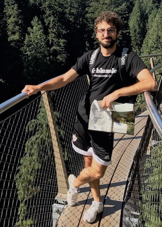

About

Click here to view my Resume in PDF format
Hi!
This website is still not finished and it will be finished soon, but here is some basic information:
Quickly about me:
My name is Osman Hajiyev and I am an undergraduate student in the University of British Columbia majoring in Computer Science. I am guilty of being passionate about a lot of things within the field of computer science. When I was a kid I never thought it was possible to love work but I love what I do, I love what I am studying. I am thankful I was lucky enough to find the work I love doing. Also, imo computer science is the field with the greatest future potential for good impact. There is still so much to learn, so much to discover and so much to do. Tbh it is the greatest time to be alive. Feeling curious and determined.. :-)
Current objective:
Very basic - After graduating try my best to surround myself with people I like, respect and admire (aka team and the company that I like) in the field/work that I love (aka software engineering, computer science). Be open minded and learn and absorb information from those people as much as I can as quickly as I can.
Passions:
Computer Science, coding
Hobbies:
Football (Soccer), Skiing, Cooking, Reading useful imo articles online, Reading useful or beautiful imo books, spending time with friends, family, girlfriend and people I admire/lookUpTo/canLearnFrom
I love Canada
(and also USA, but I guess I love Canada more since I am living here right now) and I am very thankful for living and studying in such a great country. Canada’s culture, people and identity is among the best in the world.
Also, I am thankful for my time in UBC as well. With all the beautiful moments and the ugly moments, with all the good moments and the bad moments, with all the happy moments and the sad moments, with all the successes and the mistakes (very, very valuable mistakes that I learned a lot from) and with all the amazing people I have met and learned from (I trapped some of them to become my friends) my time in UBC has been absolutely amazing and I have learned a lot about everything. I am proud and thankful.